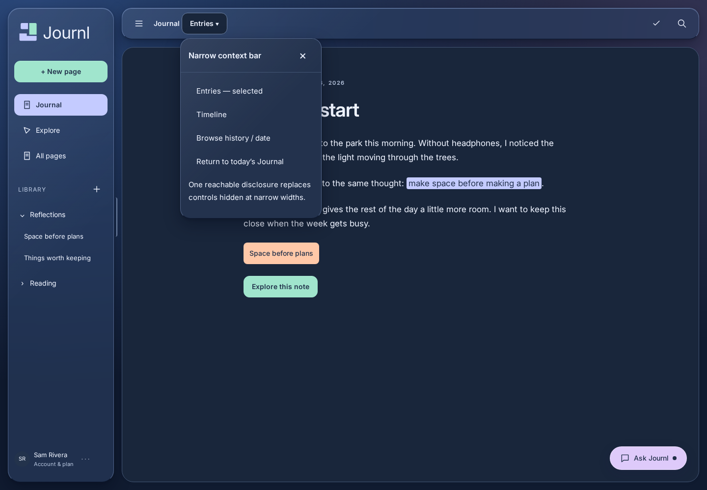
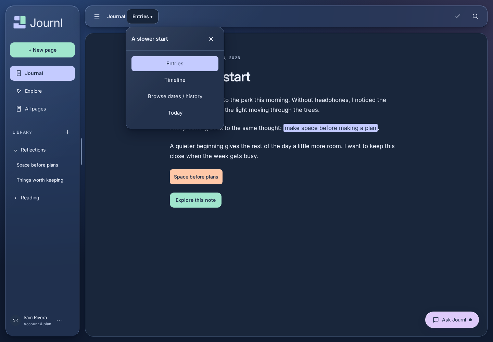
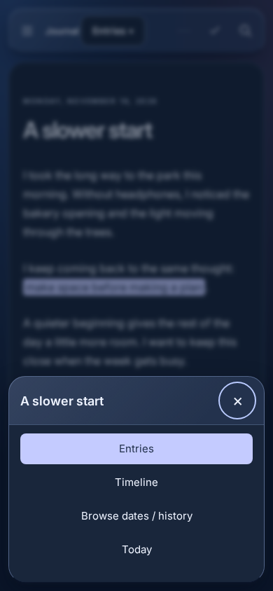
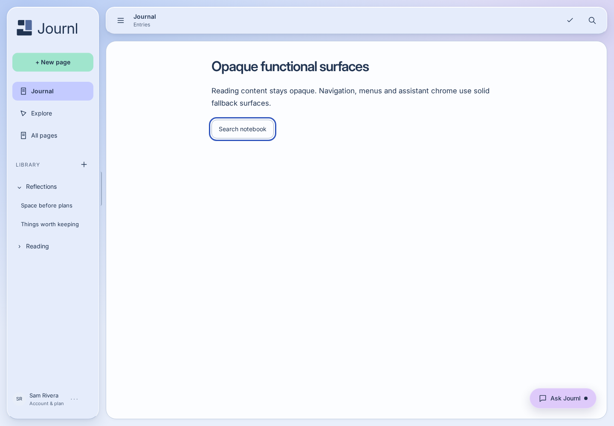
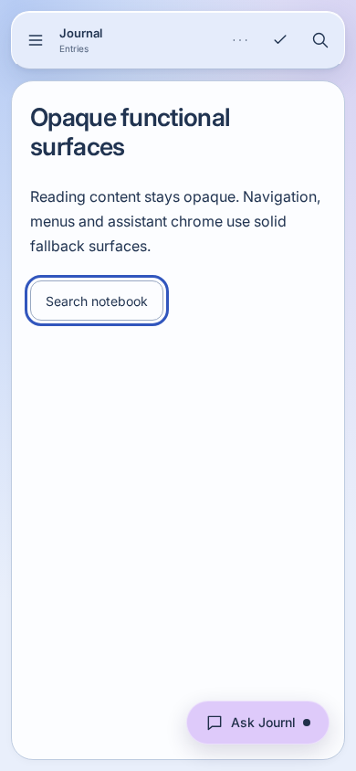
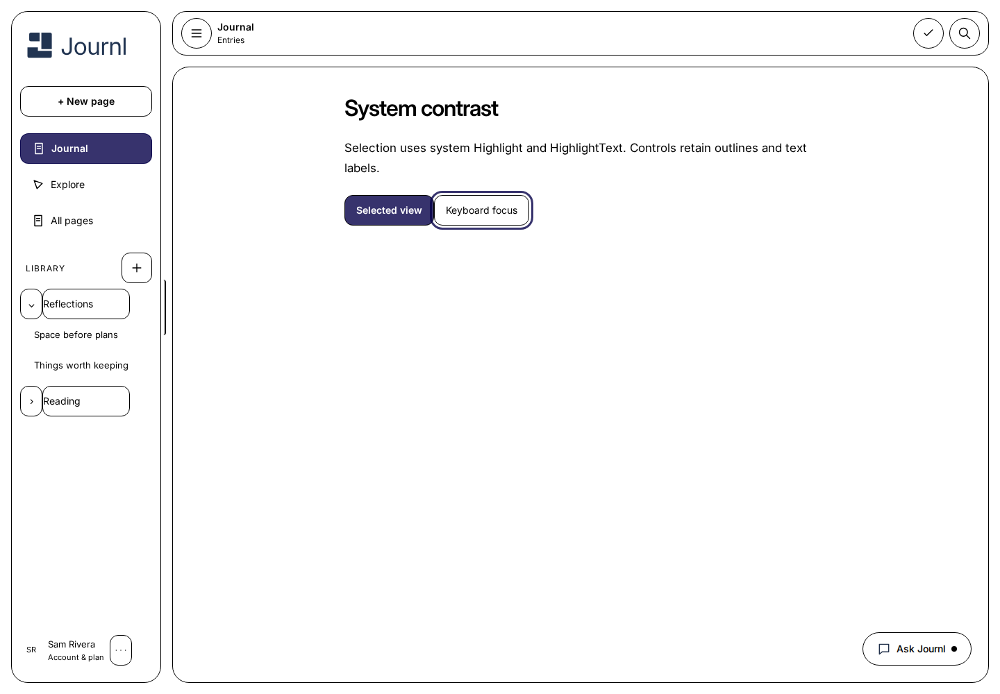

Shared
Approved application · approved logoEvery image below is an actual canonical PNG. Open an image for its full resolution. These are authored design scenes, not current-app browser captures.
Narrow context bar · route actions
narrow-route-actionsActions and implementation pointers
× · Entries — selected · Timeline · Browse history / date · Return to today’s Journal
apps/web/src/app/(app)/@header/_components/header-journal-button.tsx

SHA256 7eb3c6c699957671273348acfc0d0035bdced13c4804c5cd19f82bef3617ab3e


SHA256 8fe0b18bc0e1a02ff42a5fb863e962180118ef8ec9c34e79eb94a82c2734181a

SHA256 74998340408d189aeb1fc6583ed098191c9f966ab66212e779a54264d531d054

SHA256 7a002493d7831eb6e566f839e5c9b6b9538605eae72879b24ed169321b1af772
A slower start
journal-route-menuActions and implementation pointers
× · Entries · Timeline · Browse dates / history · Today
apps/web/src/app/(app)/@header/_components/header-journal-button.tsx

SHA256 8b7094020d15af857accf93f674f9218bea25a5e5c97f1086cce4bc176d1ac93

SHA256 b0d103a5692623797ea0cd0e3671eded69e729e6f15101c0f47bd28ea3d72913


SHA256 ae707fb893c8555d17065da6dded914bbccd2c2d38cfdf711030aab97e8d15de


SHA256 e1f0cbbc0f99aa963bd9c244f8f00062d646597ef57e8a61896bce3874795d71
Opaque functional surfaces
transparency-reducedActions and implementation pointers
+ New page · Journal · Explore · All pages · ⌄ · Reflections · › · Reading · Search notebook · Ask Journl · Today’s Journal · Close · Instant · Thinking
apps/web/src/components/ui/sidebar.tsx


SHA256 c03b2ffbda3816e7b273ed08cbaa74a7723b44d7c3bce0d0017f7669c745d98a


SHA256 0a1b753ccc21fe4257b32a4cc466db083622968f857d930cd2d42b61ec4f03d0

SHA256 1b6c592e3eb93e4e66f318d454c78e4a82c181e3444fcdf558bcaf7b74ab1fdc

SHA256 401f2267d52ffde688b6c391a5d790264e482a7b1675ec70e8efff0db7434629
System contrast
forced-colorsActions and implementation pointers
+ New page · Journal · Explore · All pages · ⌄ · Reflections · › · Reading · Selected view · Keyboard focus · Ask Journl · Today’s Journal · Close · Instant · Thinking
apps/web/src/app/styles.css

SHA256 514a80b04292754cf78460828590743d9b58dbe90f4dae11a9c583c17b3189c8


SHA256 fc382a6157994ff5d58de38795591d6d8b93d2aab011bade35aca06f40826753

SHA256 fc382a6157994ff5d58de38795591d6d8b93d2aab011bade35aca06f40826753

SHA256 514a80b04292754cf78460828590743d9b58dbe90f4dae11a9c583c17b3189c8